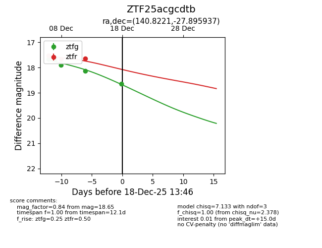
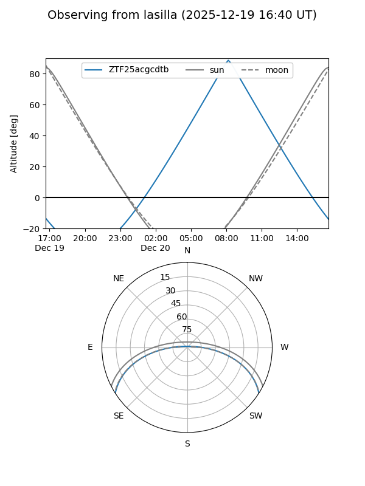
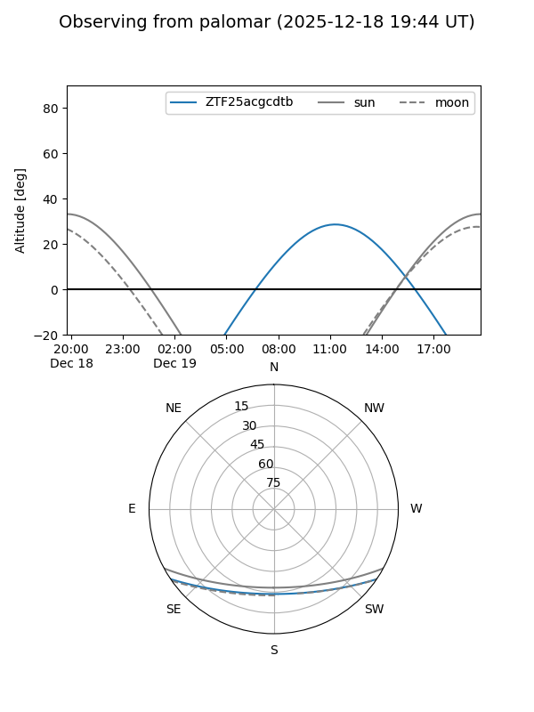
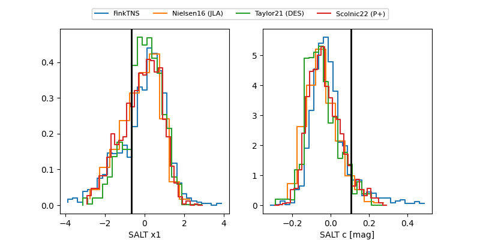

ZTF25acgcdtb
Target ZTF25acgcdtb at 2025-12-18 13:47
Aliases and brokers:
FINK: fink-portal.org/ZTF25acgcdtb
Lasair: lasair-ztf.lsst.ac.uk/objects/ZTF25acgcdtb
ALeRCE: alerce.online/object/ZTF25acgcdtb
alt names
ZTF25acgcdtb (ztf,fink_ztf)
Coordinates:
equatorial (ra, dec) = 140.8221,-27.89594
equatorial (HMS+DMS) = 09:23:17.31,-27:53:45.37
galactic (l, b) = (256.5642,+15.69505)
Photometry
last ztfg=18.65, ztfr=17.65
5 ztfg, 3 ztfr detections
Lightcurve

Visibility


Additional plots
